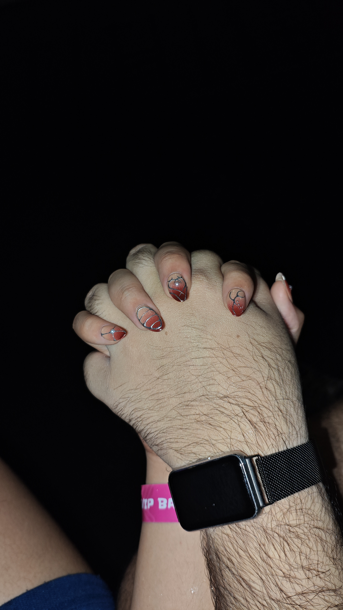
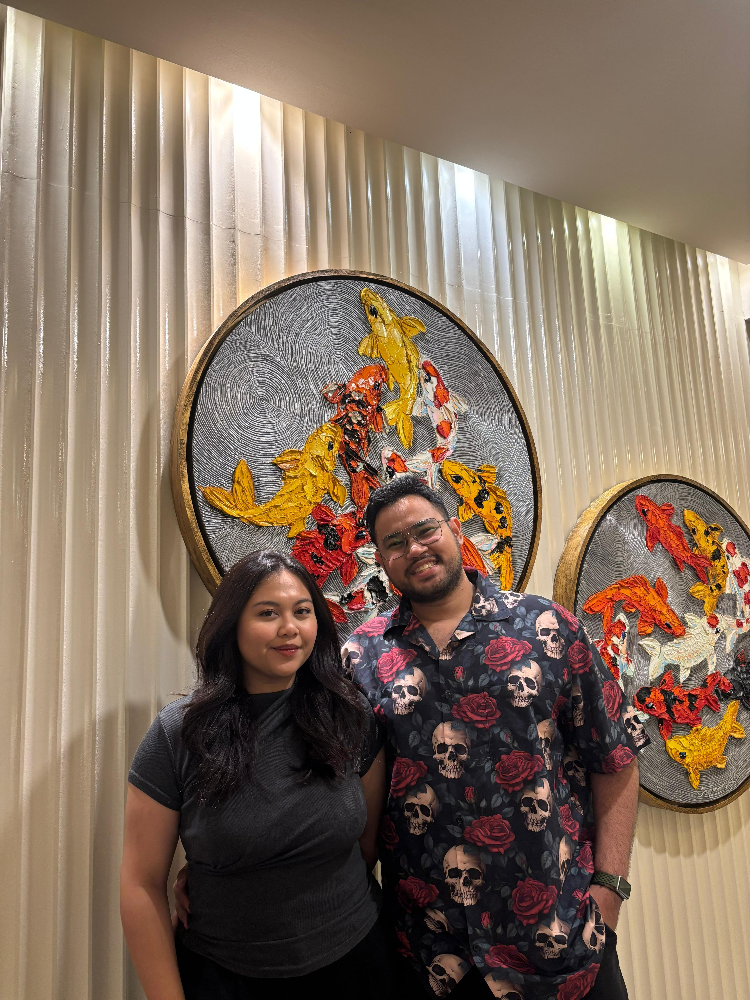
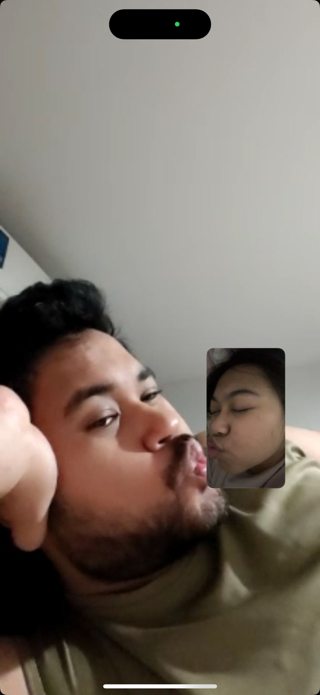

1 Month of Us ❤️
A tiny keepsake — memories, photos, and a short love note.
'"/>
Silly Faces ❤️

'"/>
That rainy day concert ❤️

'"/>
Steak Night Date ❤️

'"/>
Late-night call ❤️
Match: Mar 29
First date: Apr 5
Official: Jul 12